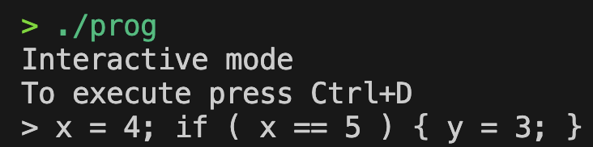

How to start
This topic provides information how to setup and run application.
How to build program
Run make command
make all
Program Usage
Run program in Interactive Mode
To run program in Interactive mode follow instruction:
Run program in your terminal
./progEnter your query
 Finish your query with EOF signal.
You will get output in files:
out.S-- assembly filetree-- tree file in a readable form
Run program in File Read Mode
Run program with file name as argument in your terminal:
./prog tests/2.t
You will get output in files:
out.S-- assembly filetree-- tree file in a readable form
Last modified: 06 June 2024